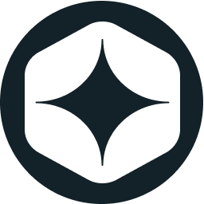

Build engineering organizations that scale
Powered by People & Microsoft / Organization and capability building
Turn an early engineering team into an organization with clear structure, technical standards and delivery accountability.
How I did it
At Powered by People, shaped team structure, budgets and headcount planning as a founding engineer progressing to Director of Engineering. At Microsoft, created an engineering academy with senior contributors from other organizations to develop early-career engineers.
- Outcome
- Helped build organizational structure and extended engineering development beyond the immediate team.
Grow engineers into technical leaders
Microsoft / People and technical leadership
Develop technical judgment and progressively greater ownership, rather than treating coaching as an end in itself.
How I did it
At Microsoft, identified skill gaps with technical leads, tailored learning paths and used situational coaching to match support to engineers' experience. Clarified expectations and progressively delegated ownership.
- Outcome
- Engineers developed greater independence, confidence and ownership of their work.
Own cloud services from strategy to production
Microsoft / Production cloud services
Connect product delivery, engineering direction and production operations under end-to-end accountability.
How I did it
At Microsoft, coordinated knowledge transfer, matched skills to service responsibilities, planned on-call coverage and aligned partner milestones with transition work and team capacity.
- Outcome
- The team took full service ownership with critical operational areas and partnerships well managed.
Lead stakeholder alignment across regions and products
Microsoft / USA, Kenya and India / Internal and third-party products
Align internal teams, external partners and senior leadership across product priorities, delivery commitments and ownership.
How I did it
At Microsoft, worked with teams in the USA, Kenya and India, managed internal and third-party products and reported to senior leadership. Used regular partner planning and status discussions to agree milestones, clarify responsibilities and align commitments with capacity.
- Outcome
- Created shared delivery expectations and senior leadership visibility across internal teams and external partners.
Turn ambiguity into executable direction
Microsoft & Powered by People / Executive influence
Translate business goals and competing commitments into roadmaps, visible trade-offs and decisions that teams can execute.
How I did it
At Microsoft, prioritized transition risks, redistributed effort to protect commitments and escalated a resourcing gap to leadership. At Powered by People, translated business priorities into engineering direction.
- Outcome
- Clearer priorities, visible resource trade-offs and commitments grounded in available capacity.
Bridge hands-on engineering and architecture

Andela to Microsoft / Technical craftConnect implementation detail with system design, testing, maintainability and distributed-system trade-offs.
How I did it
Built and guided full-stack systems at Andela and Powered by People. At Microsoft, contributed to test code, worked through engineers' problems and drew on specialists' knowledge to guide decisions and remove blockers.
- Outcome
- More grounded technical discussions and decisions supported by the team's domain expertise.
Engineering transformation / Quality and automation
Apply AI-assisted engineering and automation to reduce validation effort and strengthen quality, not simply introduce new tools.
How I did it
At Microsoft, brought in expert-led AI sessions, encouraged hands-on experimentation and created a forum to share findings and projects. Applied AI-assisted engineering and automation to accessibility and testing workflows.
- Outcome
- Built team familiarity with AI and supported practical improvements in accessibility and testing.